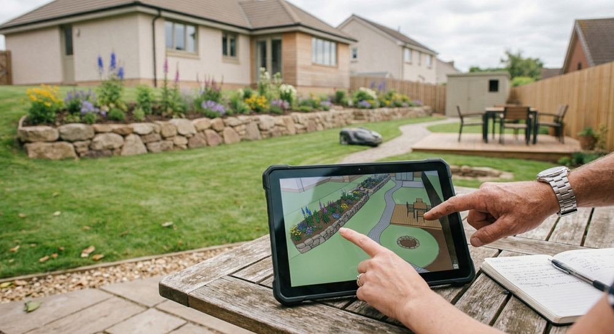
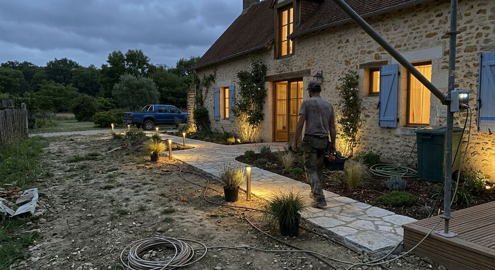
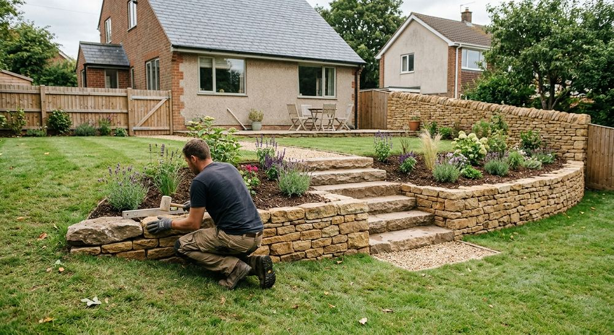
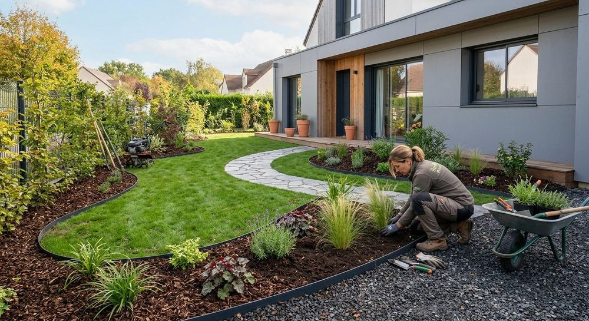
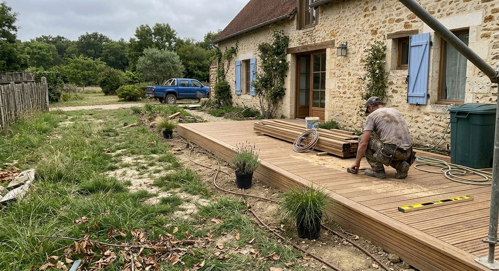
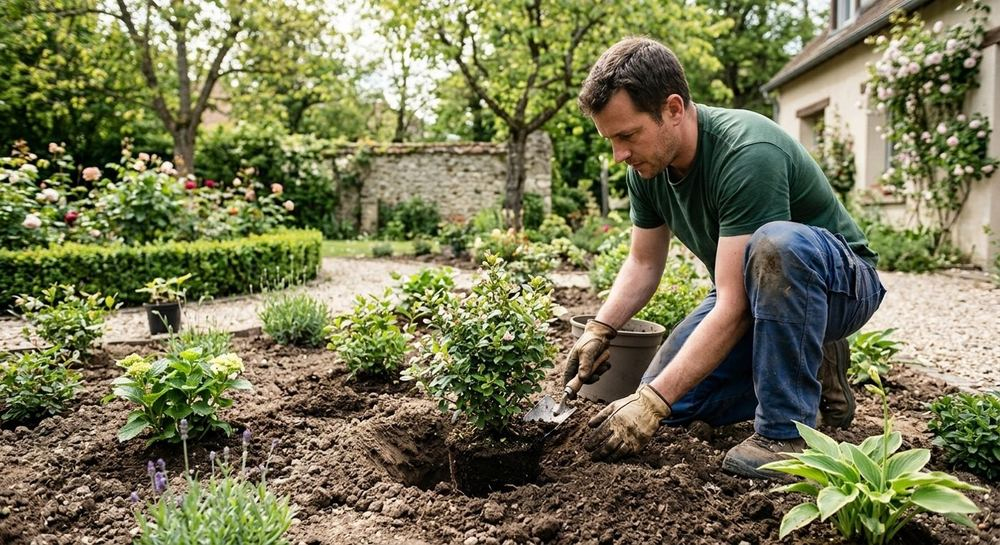
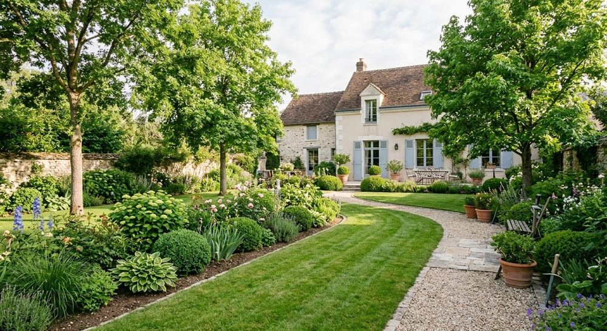

Prestations
Créer, aménager, entretenir votre jardin.
Du plan à la plantation, EIDYL PRO intervient à Saint-Germain-lès-Corbeil (91).




Création de jardins
Conception et aménagement de votre jardin : pelouse, massifs et allées pensés pour votre terrain et votre usage.

Terrasses et allées
Terrasses en bois, allées dallées ou pavées : des surfaces qui prolongent la maison et facilitent la circulation.

Plantations
Arbustes, vivaces et massifs plantés pour embellir votre jardin et structurer vos espaces.

Entretien du jardin
Tonte, taille et suivi régulier pour garder votre jardin net tout au long de l'année.
Parlons de votre jardin.
Un terrain à aménager ou un entretien à confier ? Décrivez votre besoin.